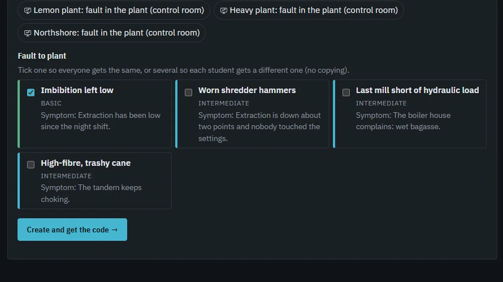

PLANTA — a 3D plant simulator for learning industrial engineering
A side project I started to understand real industry more visually: the problems I kept running into day after day on the job, rebuilt as a walkable 3D plant where you run the equipment, chase a fault upstream and learn by troubleshooting. Every plant, company and person in it is fictional.
Why
Every day on the job I met problems school never showed me: why a burner locks out, why parts come out of the oven tacky, why the alarm in one unit starts three units upstream. I wanted to see them, not just read about them.
What I built
Five walkable plants — sugar mill, citrus processing, foundry & heavy manufacturing, car assembly and industrial finishing — with 68 interactive 3D simulators, 93 courses and a teacher mode that plants faults.
Engineering
Strict TypeScript, React and three.js; process and physics models as pure, tested functions; ~2,700 automated tests; every piece of content schema-validated; offline-first; LMS export (SCORM / cmi5).
01Inside the simulator
02Teacher mode: plant a fault
The teacher hides the fault
Pick a fault from a catalogue grouped by industry — for example “imbibition left low” or “worn shredder hammers” — and hand students a code. Each student troubleshoots from the symptoms alone, and the teacher gets a step-by-step report of what they checked.

03How it’s built
- Content is data. Courses, items and plants are JSON validated by zod schemas in the test suite; adding a course or a plant never touches engine code.
- Simulation layer as pure functions. 76 process and physics modules written as plain TypeScript, with their simplifications stated at the top of each file — testable without any UI.
- Tests that enforce the teaching. Besides unit tests, the suite checks that no question asks for something the learner hasn’t been taught yet, that every skill is evidenced by at least two items, and that episodes mix item types.
- Offline-first. Progress is saved locally with export/import and versioned save migrations; it runs fully without a network.
- Delivery. Windows desktop build with Electron, a student edition without teacher tools, and SCORM 1.2 / cmi5 export for school learning platforms.
- Built with AI coding agents — the same way I build my other tools — with a headless capture pipeline that records the footage on this page frame by frame.
04By the numbers
05Learning design
- Mastery gating at 80% with varied retries, spaced review of what you missed, and an explanation on every wrong answer.
- Safety is never optional: bypassing an interlock or skipping lockout/tagout is a serious violation.
- Your country, your codes, your units: United States, Canada, Mexico and Argentina; SI and imperial side by side. English text with full Spanish, and a glossary of 916 terms in English, Spanish and French.
06Context
A personal side project, built on my own computer in my spare time. It is not affiliated with any employer. Every plant, company and person in it is fictional.